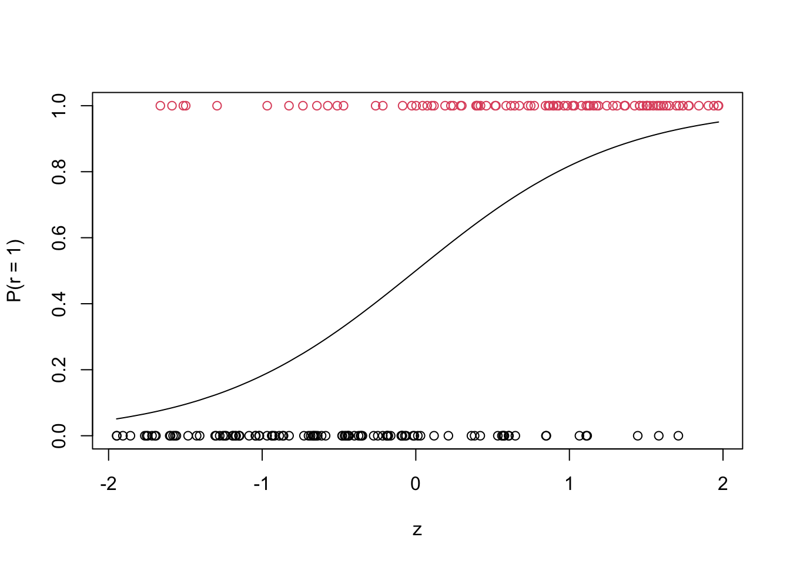

### numerically stable log(1 + exp(u))
log1pexp <- function(u) pmax(u, 0) + log1p(exp(-abs(u)))
### negative log-likelihood, negative score, and information matrix
lik_score_info <- function(b, r, z) {
u <- b[1] + b[2] * z
p <- plogis(u)
w <- p * (1 - p)
list(
neg_loglik = -sum(u * r - log1pexp(u)),
neg_score = -c(sum(r - p), sum(z * (r - p))),
inf = matrix(c(sum(w), sum(z * w),
sum(z * w), sum(z * z * w)), 2, 2)
)
}
neg_logp_logistic <- function(b, z, r) {
u <- b[1] + b[2] * z
-sum(u * r - log1pexp(u))
}6 Multivariate Optimization Methods for Finding MLE
In the previous chapter the parameter was a scalar, and the log-likelihood could be inspected by plotting it. Once \(\theta \in \mathbb{R}^p\) neither is true: we cannot see the surface, and the notion of “bracketing a root” that underlies bisection and golden section has no direct multivariate analogue. What survives is the local quadratic approximation, and the Newton–Raphson algorithm is its direct consequence.
This chapter develops the multivariate Newton–Raphson method and its statistical variant, Fisher scoring, applies both to logistic regression, examines interactively how and why the iteration can diverge, and closes with a survey of the derivative-free and gradient-only alternatives.
6.1 The Newton–Raphson Algorithm in Several Dimensions
6.1.1 Derivation from a quadratic approximation
Write the log-likelihood as \(\ell(\theta)\) for \(\theta \in \mathbb{R}^p\), and define
\[ S(\theta) = \frac{\partial \ell(\theta)}{\partial \theta} \quad (p \times 1, \text{ the score}), \qquad H(\theta) = \frac{\partial^2 \ell(\theta)}{\partial \theta \, \partial \theta^{\top}} \quad (p \times p, \text{ the Hessian}). \]
The negative Hessian \(J(\theta) = -H(\theta)\) is the observed information matrix.
Expand \(\ell\) to second order about the current iterate \(\theta^{(k)}\):
\[ \ell(\theta) \;\approx\; \ell(\theta^{(k)}) + S(\theta^{(k)})^{\top}(\theta - \theta^{(k)}) - \tfrac{1}{2}\,(\theta - \theta^{(k)})^{\top} J(\theta^{(k)}) \,(\theta - \theta^{(k)}). \]
This is a quadratic in \(\theta\). If \(J(\theta^{(k)})\) is positive definite the quadratic has a unique maximum, found by setting its derivative to zero:
\[ S(\theta^{(k)}) - J(\theta^{(k)})(\theta - \theta^{(k)}) = 0 . \]
Solving for \(\theta\) gives the Newton–Raphson update:
\[ \boxed{\;\theta^{(k+1)} = \theta^{(k)} + J(\theta^{(k)})^{-1} S(\theta^{(k)}) \;} \]
The algorithm therefore replaces the log-likelihood by the quadratic that matches its value, slope and curvature at the current point, and jumps to the maximum of that quadratic. Everything that follows — the fast convergence, and the modes of failure — comes from how good or bad that replacement is.
Three remarks are worth making explicit.
The inverse is never formed. Write the update as \(\theta^{(k+1)} = \theta^{(k)} + \delta^{(k)}\) where \(\delta^{(k)}\) solves the linear system \(J(\theta^{(k)})\,\delta = S(\theta^{(k)})\). In R this is solve(J, S), not solve(J) %*% S. The former is faster and numerically more stable; the latter computes \(p^2\) numbers in order to use \(p\) of them.
The step is not the gradient direction. \(\delta^{(k)} = J^{-1}S\) points along the gradient only when \(J\) is a multiple of the identity. The information matrix rescales and rotates the ascent direction to account for differing curvature and correlation among the parameters, which is exactly why Newton–Raphson is insensitive to the scaling of the parameters while gradient descent is not.
Positive definiteness is an assumption, not a guarantee. Away from the maximum \(J(\theta^{(k)})\) can be indefinite or singular, in which case the “maximum of the quadratic” is a saddle point or does not exist, and \(\delta^{(k)}\) may point downhill. Section 6.3 examines this.
6.1.1.1 Fisher scoring
The observed information \(J(\theta)\) depends on the data. Its expectation under the model,
\[ I(\theta) = E_{\theta}\{J(\theta)\} = -E_{\theta}\left\{ \frac{\partial^2 \ell(\theta)}{\partial \theta \, \partial \theta^{\top}} \right\}, \]
is the expected (Fisher) information matrix. Replacing \(J\) by \(I\) in the update gives the method of scoring:
\[ \theta^{(k+1)} = \theta^{(k)} + I(\theta^{(k)})^{-1} S(\theta^{(k)}). \]
The two algorithms have different iterates but the same fixed point, since both stop where \(S(\theta) = 0\). The practical differences:
| Newton–Raphson | Fisher scoring | |
|---|---|---|
| Curvature matrix | Observed information \(J(\theta)\) | Expected information \(I(\theta)\) |
| Derivation | Second derivative of \(\ell\) | Expectation of that second derivative |
| Positive definite? | Only guaranteed near the maximum | Always, wherever the model is identified |
| Algebra | Can be messy | Often simpler, as data-dependent terms average out |
| Local convergence | Quadratic | Linear, but typically with a very small rate constant |
| Stability from poor starts | Less stable | More stable |
The guaranteed positive definiteness of \(I(\theta)\) is the main practical argument for scoring: the update direction is always an ascent direction, so the iteration cannot be sent uphill-seeking in a downhill direction by an ill-behaved Hessian.
For generalised linear models with the canonical link the two coincide exactly, because the second derivative of the log-likelihood does not involve the response. Logistic regression uses the canonical logit link, so the example below is simultaneously Newton–Raphson, Fisher scoring, and — as we note at the end of the section — iteratively reweighted least squares.
6.1.2 Convergence properties
Near a maximum \(\hat\theta\) at which \(J(\hat\theta)\) is positive definite, Newton–Raphson converges quadratically: the error satisfies
\[ \|\theta^{(k+1)} - \hat\theta\| \;\le\; C \,\|\theta^{(k)} - \hat\theta\|^{2} \]
for some constant \(C\) depending on the third derivatives. Informally, the number of correct digits doubles at each iteration, which is why five or six iterations are usually enough and why a well-started run appears to converge instantly.
The qualification “near” is essential. The theorem is local: it guarantees nothing about a start far from \(\hat\theta\), and nothing at all if \(J\) fails to be positive definite along the way.
6.1.3 Standard errors as a by-product
At convergence the same matrix that drove the iteration supplies the asymptotic variance. Under the usual regularity conditions,
\[ \hat\theta \;\dot\sim\; N\!\left(\theta, \; J(\hat\theta)^{-1}\right), \]
so \(\operatorname{SE}(\hat\theta_j) = \sqrt{[J(\hat\theta)^{-1}]_{jj}}\). This is a genuine practical advantage of Newton-type methods over derivative-free ones: the curvature information needed for inference has already been computed. Methods that never form a Hessian require a separate numerical differentiation step, which is what hessian = TRUE requests from nlm and optim.
6.2 Worked Example: Logistic Regression
6.2.1 The model and its derivatives
With a single covariate \(z_i\) and binary response \(r_i\), let \(u_i = \beta_0 + \beta_1 z_i\) and \(p_i = e^{u_i}/(1 + e^{u_i})\). The log-likelihood is
\[ \ell(\beta) = \sum_{i=1}^{n}\left\{ r_i u_i - \log\left(1 + e^{u_i}\right) \right\}. \]
Writing \(X\) for the \(n \times 2\) design matrix with rows \((1, z_i)\), the score and information are
\[ S(\beta) = X^{\top}(r - p), \qquad J(\beta) = X^{\top} W X, \qquad W = \operatorname{diag}\{p_i(1 - p_i)\}. \]
Note that \(J\) does not involve \(r\). This is the canonical-link property mentioned above, and it means \(J(\beta) = I(\beta)\) identically.
Two numerical points, both carried over from the chapter on computer arithmetic. First, \(\log(1 + e^{u})\) overflows for \(u \gtrsim 710\); the stable form is \(\log(1+e^u) = \max(u,0) + \log(1 + e^{-|u|})\). Second, \(p_i(1-p_i) \to 0\) when \(|u_i|\) is large, so \(W\) — and hence \(J\) — degenerates toward singularity when the fitted probabilities are extreme. That observation is the whole explanation of the divergence we are about to see.
6.2.2 Implementation
Because we minimise the negative log-likelihood, the update \(\beta^{(k+1)} = \beta^{(k)} + J^{-1}S\) becomes \(\beta^{(k+1)} = \beta^{(k)} - J^{-1} \times (\text{negative score})\), which is the form coded below.
mle_logistic_nr <- function(b0, no_iter, r, z, debug = FALSE) {
out <- matrix(NA_real_, no_iter + 1, 3,
dimnames = list(NULL, c("beta0", "beta1", "neg_loglike")))
b <- b0
for (i in seq_len(no_iter + 1)) {
q <- lik_score_info(b, r, z)
out[i, ] <- c(b, q$neg_loglik)
if (debug) print(out[i, ])
if (i > no_iter) break
step <- tryCatch(solve(q$inf, q$neg_score),
error = function(e) rep(NA_real_, 2))
if (any(!is.finite(step))) break
b <- b - step
}
out
}gen_logistic_data <- function(b, n) {
z <- sort(runif(n, -2, 2))
p <- plogis(b[1] + b[2] * z)
r <- rbinom(n, 1, p)
plot(z, p, type = "l", ylim = c(0, 1), ylab = "P(r = 1)")
points(z, r, col = r + 1)
list(z = z, r = r)
}
set.seed(1)
data <- gen_logistic_data(c(0, 1.5), 200)
A start close to the truth converges in a handful of iterations:
round(mle_logistic_nr(c(0, 3), 8, data$r, data$z), 6) beta0 beta1 neg_loglike
[1,] 0.000000 3.000000 117.03598
[2,] -0.505055 -0.306054 164.86061
[3,] -0.040097 1.281039 99.03765
[4,] -0.251124 1.470987 97.74624
[5,] -0.272205 1.502838 97.72964
[6,] -0.272532 1.503424 97.72964
[7,] -0.272532 1.503424 97.72964
[8,] -0.272532 1.503424 97.72964
[9,] -0.272532 1.503424 97.72964The doubling of correct digits predicted by the quadratic-convergence result is visible in the final rows.
6.2.3 Comparison with nlm and glm
logit_nlm <- nlm(neg_logp_logistic, c(0, 0),
z = data$z, r = data$r, hessian = TRUE)
logit_nlm$estimate[1] -0.2725325 1.5034237sqrt(diag(solve(logit_nlm$hessian))) # asymptotic standard errors[1] 0.1797391 0.2089673summary(glm(r ~ z, family = binomial(), data = data))$coefficients Estimate Std. Error z value Pr(>|z|)
(Intercept) -0.2725322 0.1797371 -1.516283 1.294479e-01
z 1.5034244 0.2089473 7.195234 6.235374e-13The three routes agree to printing accuracy. glm is doing the same arithmetic as mle_logistic_nr: for a GLM the Newton–Raphson step can be rearranged as a weighted least-squares fit of the working response \(u_i + (r_i - p_i)/\{p_i(1-p_i)\}\) on \(X\) with weights \(p_i(1-p_i)\), giving iteratively reweighted least squares (IRLS). This is not a different algorithm but a different arrangement of the same one, and it explains why glm reports “Fisher Scoring iterations” in its output.
6.3 Divergence
6.3.1 What goes wrong
The quadratic approximation is trustworthy only in a neighbourhood of the current iterate. Starting from a large \(|\beta_1|\), nearly all fitted probabilities are pushed to \(0\) or \(1\), so the weights \(p_i(1-p_i)\) are essentially zero, \(J\) is nearly singular, and \(J^{-1}\) is enormous. The resulting step is huge, the new iterate lands far outside the region where the quadratic was a reasonable fit, and the process can oscillate or run off to infinity — even though the logistic log-likelihood is globally concave and has a unique maximum.
The interactive figure below lets you choose a starting value and step through the iterations. Press the play button on the iteration slider to animate the path over the contours of the negative log-likelihood.
#| label: nr-divergence-app
#| standalone: true
#| viewerHeight: 640
library(shiny)
### ---------- fixed data ----------------------------------------------------
set.seed(1)
n <- 200
z <- sort(runif(n, -2, 2))
r <- rbinom(n, 1, plogis(0 + 1.5 * z))
log1pexp <- function(u) pmax(u, 0) + log1p(exp(-abs(u)))
negll <- function(b) {
u <- b[1] + b[2] * z
-sum(u * r - log1pexp(u))
}
### ---------- contour grid (computed once) ----------------------------------
B0 <- seq(-3, 3, by = 0.1)
B1 <- seq(-8, 8, by = 0.2)
Z <- outer(B0, B1, Vectorize(function(a, b) negll(c(a, b))))
### ---------- Newton-Raphson path -------------------------------------------
nr_path <- function(b0, maxit = 15, halving = FALSE) {
P <- matrix(NA_real_, maxit + 1, 3,
dimnames = list(NULL, c("beta0", "beta1", "negll")))
b <- b0
P[1, ] <- c(b, negll(b))
for (i in seq_len(maxit)) {
u <- b[1] + b[2] * z
p <- plogis(u)
w <- p * (1 - p)
g <- -c(sum(r - p), sum(z * (r - p)))
J <- matrix(c(sum(w), sum(z * w), sum(z * w), sum(z * z * w)), 2, 2)
step <- tryCatch(solve(J, g), error = function(e) rep(NA_real_, 2))
if (any(!is.finite(step))) break
if (halving) {
f0 <- P[i, 3]; s <- 1
repeat {
bn <- b - s * step
fn <- negll(bn)
if ((is.finite(fn) && fn <= f0) || s < 1e-6) break
s <- s / 2
}
b <- bn
} else {
b <- b - step
}
if (any(!is.finite(b))) break
P[i + 1, ] <- c(b, negll(b))
}
P
}
### ---------- UI -------------------------------------------------------------
ui <- fluidPage(
titlePanel(NULL),
sidebarLayout(
sidebarPanel(
width = 4,
numericInput("b0", HTML("starting β<sub>0</sub>"),
value = 0, step = 0.5),
numericInput("b1", HTML("starting β<sub>1</sub>"),
value = 5, step = 0.5),
checkboxInput("halve", "apply step halving", FALSE),
sliderInput("iter", "iteration", min = 0, max = 15, value = 0,
step = 1, animate = animationOptions(interval = 900)),
helpText("Try (0, 3) and then (0, 5). The second start makes the ",
"information matrix nearly singular, so the first step ",
"overshoots badly."),
tableOutput("tab")
),
mainPanel(
width = 8,
plotOutput("contour", height = "380px"),
plotOutput("trace", height = "200px")
)
)
)
### ---------- server ---------------------------------------------------------
server <- function(input, output, session) {
path <- reactive({
nr_path(c(input$b0, input$b1), maxit = 15, halving = input$halve)
})
shown <- reactive({
P <- path()
k <- min(input$iter + 1, nrow(P))
P[seq_len(k), , drop = FALSE]
})
output$contour <- renderPlot({
P <- shown()
par(mar = c(4, 4, 2, 1))
contour(B0, B1, Z, nlevels = 40, drawlabels = FALSE,
col = "grey70",
xlab = expression(beta[0]), ylab = expression(beta[1]),
main = "negative log-likelihood surface and NR path")
ok <- complete.cases(P)
if (sum(ok) > 1) {
lines(P[ok, 1], P[ok, 2], col = "steelblue", lwd = 2)
points(P[ok, 1], P[ok, 2], pch = 21, bg = "steelblue", cex = 1.1)
}
last <- P[max(which(complete.cases(P))), , drop = FALSE]
points(last[1], last[2], pch = 21, bg = "firebrick", cex = 1.8)
outside <- last[1] < min(B0) || last[1] > max(B0) ||
last[2] < min(B1) || last[2] > max(B1)
if (isTRUE(outside)) {
mtext(sprintf("current iterate (%.1f, %.1f) is off the plotted region",
last[1], last[2]), side = 3, line = -1.5,
col = "firebrick", cex = 0.9)
}
points(0, 1.5, pch = 3, col = "darkgreen", lwd = 2)
})
output$trace <- renderPlot({
P <- path()
k <- min(input$iter + 1, nrow(P))
par(mar = c(4, 4, 1, 1))
yl <- range(P[, 3], na.rm = TRUE)
plot(0:(nrow(P) - 1), P[, 3], type = "n", ylim = yl,
xlab = "iteration", ylab = "negative log-likelihood")
lines(0:(k - 1), P[seq_len(k), 3], type = "b", pch = 19,
col = "steelblue")
})
output$tab <- renderTable({
P <- shown()
d <- as.data.frame(P)
d$iteration <- seq_len(nrow(d)) - 1
d <- d[, c("iteration", "beta0", "beta1", "negll")]
tail(d, 5)
}, digits = 4, rownames = FALSE)
}
shinyApp(ui, server)
NoteReproducing this figure
The chunk above uses the shinylive extension, which compiles the app to WebAssembly so that it runs in the reader’s browser with no Shiny server. Install it once per project with
quarto add quarto-ext/shinyliveand add filters: [shinylive] to the document or project YAML. Only packages available in webR may be used inside the app, so the code above is restricted to base R and shiny.
6.3.2 Safeguards
The divergence is not a defect of the Newton direction but of the Newton step length. The standard remedies all keep the direction and control the distance.
Step halving (backtracking). Take \(\delta^{(k)}\) as usual but move \(\theta^{(k+1)} = \theta^{(k)} + s\,\delta^{(k)}\), starting from \(s = 1\) and halving until the log-likelihood actually increases. This costs a few extra function evaluations, never damages quadratic convergence near the maximum (where \(s = 1\) is accepted on the first try), and rescues most divergent runs. Toggle it in the app above to see the effect.
Ridging (Levenberg–Marquardt). Replace \(J\) by \(J + \lambda \mathbb{I}\) with \(\lambda > 0\). Large \(\lambda\) shrinks the step toward a small gradient step; \(\lambda \to 0\) recovers Newton. This also repairs indefiniteness, and is the approach nlm takes internally.
Trust regions. Maximise the quadratic approximation subject to \(\|\theta - \theta^{(k)}\| \le \Delta_k\), adapting \(\Delta_k\) according to how well the quadratic predicted the realised change. This is nlminb and the PORT routines.
Reparameterisation and good starts. Often the cheapest fix. Centring and scaling covariates improves conditioning of \(J\) substantially, and for GLMs the null-model fit is a reliable starting point — which is what glm uses when start is not supplied.
6.4 Other Multivariate Optimization Methods
Newton–Raphson is the method of choice when the second derivatives are available and \(p\) is modest. Outside that regime, three considerations push toward alternatives: derivatives may be unavailable or painful to code; the \(O(p^3)\) cost of solving the Newton system and the \(O(p^2)\) storage of \(J\) become prohibitive for large \(p\); and the objective may be non-smooth, noisy or multimodal.
6.4.1 Classification by derivative information
Methods are most usefully organised by what they require of the objective.
| Order | Requires | Methods | Typical use |
|---|---|---|---|
| 0 | Function values only | Nelder–Mead, simulated annealing, genetic algorithms | Non-smooth, discontinuous, or awkward-to-differentiate objectives; small \(p\) |
| 1 | Gradient | Steepest descent, conjugate gradient, quasi-Newton (BFGS, L-BFGS), stochastic gradient descent | The workhorse class; large \(p\); gradients cheap by automatic differentiation |
| 2 | Gradient and Hessian | Newton–Raphson, Fisher scoring, IRLS, trust-region Newton | Statistical models of modest dimension where the Hessian is also wanted for inference |
6.4.2 The main alternatives
Nelder–Mead (simplex). Maintains \(p+1\) points forming a simplex and moves it downhill by reflecting, expanding, contracting and shrinking. It needs no derivatives and tolerates mild non-smoothness, but converges slowly, degrades badly as \(p\) grows past roughly 10–20, and can stall at non-stationary points. It is optim’s default, which makes it by far the most-used and most-overused method in R. Reasonable as a first look at an unfamiliar objective; a poor choice for a likelihood you will fit thousands of times.
Steepest descent with line search. Move along \(-\nabla f\), choosing the distance by a one-dimensional search. Conceptually the simplest gradient method and the one that best illustrates the role of a line search, but the convergence is only linear, and the rate deteriorates with the condition number of the Hessian: on an elongated valley the iterates zig-zag across it rather than travelling along it. Rarely used unmodified.
Conjugate gradient. Corrects the zig-zag by choosing each direction to be conjugate to the previous ones with respect to the local curvature, without ever forming or storing a Hessian. Storage is \(O(p)\), which is its defining advantage. Fletcher–Reeves and Polak–Ribière differ only in the formula for the correction coefficient. The method is sensitive to the accuracy of the line search and usually needs periodic restarting.
Quasi-Newton (BFGS and L-BFGS). Builds an approximation to \(J^{-1}\) from successive gradient differences, so it attains superlinear convergence with only first derivatives. BFGS stores a full \(p \times p\) approximation; L-BFGS keeps only the last few update vectors, reducing storage to \(O(mp)\) and making it the default choice for high-dimensional smooth problems. For most likelihood problems where the Hessian is awkward to derive, BFGS with an analytic gradient is the best practical compromise.
Stochastic gradient descent. For an objective that is a sum over \(n\) observations, estimate the gradient from a small random subset (“minibatch”) at each step. The per-iteration cost becomes independent of \(n\), at the price of a noisy trajectory requiring a decreasing step-size sequence (\(\sum_k \alpha_k = \infty\), \(\sum_k \alpha_k^2 < \infty\)). Modern variants — momentum, AdaGrad, RMSProp, Adam — adapt the step size per coordinate. SGD is the foundation of neural-network fitting and is treated in its own right in a later chapter; for classical likelihood problems with \(n\) in the thousands it offers nothing over BFGS.
6.4.3 Comparison
| Method | Derivatives | Storage | Cost per iteration | Local rate | Robust start | Hessian for SEs |
|---|---|---|---|---|---|---|
| Nelder–Mead | none | \(O(p^2)\) | \(O(p)\) evaluations | sublinear | good | no |
| Steepest descent | gradient | \(O(p)\) | 1 gradient + line search | linear (slow) | good | no |
| Conjugate gradient | gradient | \(O(p)\) | 1 gradient + line search | linear (fast) | moderate | no |
| BFGS | gradient | \(O(p^2)\) | 1 gradient + \(O(p^2)\) | superlinear | moderate | approximate |
| L-BFGS | gradient | \(O(mp)\) | 1 gradient + \(O(mp)\) | superlinear | moderate | no |
| Newton–Raphson | gradient, Hessian | \(O(p^2)\) | 1 Hessian + \(O(p^3)\) | quadratic | poor | exact |
| Fisher scoring / IRLS | score, expected information | \(O(p^2)\) | 1 weighted LS fit | near-quadratic | fair | exact |
| Stochastic gradient | minibatch gradient | \(O(p)\) | \(O(\text{batch})\) | sublinear | good | no |
6.4.4 Implementations in R
| Function | Package | Methods available | Notes |
|---|---|---|---|
optim |
stats | Nelder–Mead, BFGS, CG, L-BFGS-B, SANN | General workhorse; supply gr or the gradient is differenced; hessian = TRUE for inference; L-BFGS-B allows box constraints |
nlm |
stats | Newton-type with ridging | Uses analytic gradient/Hessian if attached as attributes, otherwise numerical; returns $hessian |
nlminb |
stats | Trust-region (PORT) | Reliable on badly scaled problems; supports box constraints |
optimize, uniroot |
stats | Golden section, Brent | One dimension only |
glm |
stats | IRLS (Fisher scoring) | The specialised case; use start when separation is suspected |
nls |
stats | Gauss–Newton, Golub–Pereyra | Nonlinear least squares; port algorithm adds constraints |
optimx |
optimx | Unified front end to a dozen optimizers | Useful for comparing methods on the same objective |
nloptr |
nloptr | Large NLopt collection, with constraints | Global and derivative-free options |
Rsolnp, alabama |
— | Nonlinear equality and inequality constraints | For genuinely constrained problems |
6.4.5 Choosing a method
| Situation | Suggested approach |
|---|---|
| Hessian derivable, \(p\) small, standard errors wanted | Newton–Raphson or Fisher scoring |
| GLM or a model expressible as one | glm (IRLS) |
| Gradient available, \(p\) moderate | BFGS via optim(method = "BFGS") |
| Gradient available, \(p\) large | L-BFGS |
| Derivatives unavailable, \(p < 10\) | Nelder–Mead as a first pass, then refine |
| Objective noisy or non-smooth | Nelder–Mead or simulated annealing |
| Divergence or poor conditioning suspected | nlm or nlminb; rescale the parameters |
| Objective a sum over very many observations | Stochastic gradient descent and variants |
| Multiple local maxima suspected | Multiple random starts with any of the above |
The last row deserves emphasis. Every method in this chapter is a local method: each converges to a stationary point near where it started, and none can certify that the point found is the global maximum. Restarting from a dispersed set of initial values and comparing the attained log-likelihoods is the only general safeguard, and it should be routine for any likelihood that is not known to be concave.